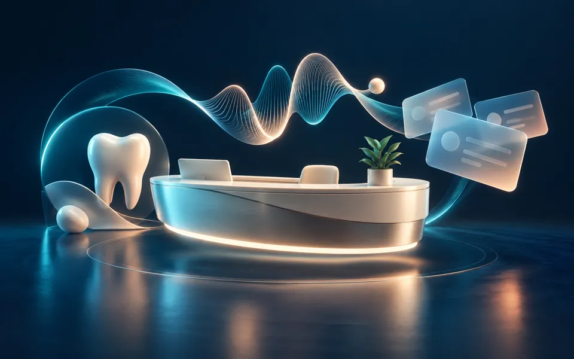
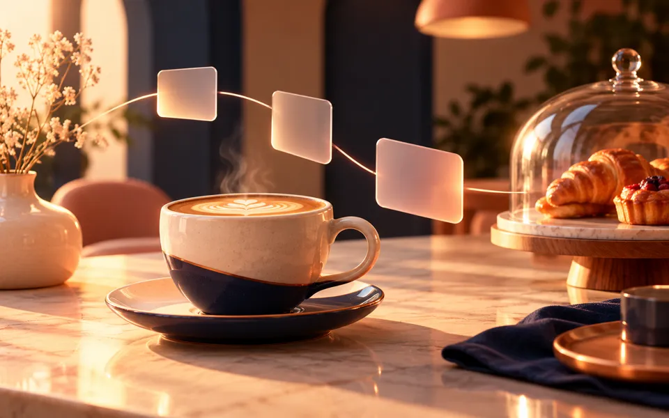
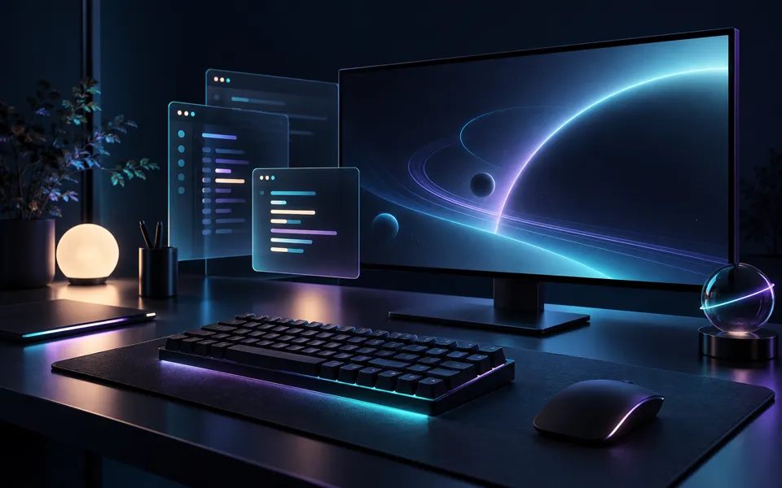

AI product systems
RAG, local or hosted LLMs, agent workflows, and human-friendly AI features built around a real product need.
Pratham Singh
Full-Stack & AI Developer
Delhi, India
I help early-stage teams ship AI-powered web and mobile products.
01 — About
I'm a developer from Delhi, India, helping early-stage teams turn ideas into useful AI-powered products and the systems that make them reliable.
My work spans FastAPI backends, RAG and multi-agent workflows, Android applications with Kotlin, and TypeScript web experiences. I enjoy taking an idea from an early prototype to a clear, usable product.
When I'm not building projects, I'm refining my Arch Linux + Hyprland setup, exploring open-source opportunities, or starting one too many side projects.
Available for
interesting ideas
02 — How I can help
I work best with teams that need a practical builder across product, AI, backend, and interface—not just a prototype that looks convincing.
RAG, local or hosted LLMs, agent workflows, and human-friendly AI features built around a real product need.
FastAPI services, REST APIs, data models, authentication, and operations tooling that make a product dependable.
Focused web experiences that clarify an idea, demonstrate the workflow, and create a strong foundation for iteration.
Kotlin and Jetpack Compose applications for mobile-first workflows, connected to thoughtful backend systems.
Practical products, working workflows, and the technical choices behind them.

PythonFastAPIVoice UXTestingA dental-clinic front-desk system for appointments, doctor schedules, callbacks, QR check-in, analytics, and a rule-based patient assistant with a simulated multilingual voice call.
An Android-first doorstep electronics-repair platform for diagnostics, bookings, repair tracking, quote approval, payments, and warranty claims. Payments and partner operations are simulated.
A FastAPI clinic campaign platform for registrations, privacy-safe QR offers, staff-scoped access, one-time redemptions, delivery workflows, and audit logs.
An AI-powered startup-intelligence platform that uses multi-agent workflows and retrieval-augmented generation to help founders validate and develop ideas.

ReactTypeScriptViteA polished café landing-page prototype with responsive interactions and a content model designed for easy client handoff.
Role-based internal workspace for tasks, growth pipeline, marketing, engineering operations, quality, meetings, and approvals.

Public repository
A developer-focused Arch Linux and Hyprland desktop setup with a glass-inspired Waybar, Wofi, Kitty, live wallpapers, and a workflow tuned for productivity and gaming.

Experiment
A CLI for running local qwen3:8b models through Ollama with streamed output and temperature controls.
AI / LLM Local LLMs, Ollama, RAG, AI Agents, LLM APIs, Prompt Engineering, Streaming
Backend Python, FastAPI, REST APIs, SQLite, PostgreSQL, Alembic, Docker, Testing
Web & Mobile TypeScript, Next.js, React, Vite, Kotlin, Jetpack Compose, Ktor, WorkManager
Systems Arch Linux, Hyprland, Wayland, Bash, Git, GitHub, Virtual Environments
Currently exploring
05 — Contact
Have an AI product, internal tool, web app, or Android workflow in mind? Tell me what you are trying to make.
Email Pratham praathaaam@gmail.comRésumé available on request